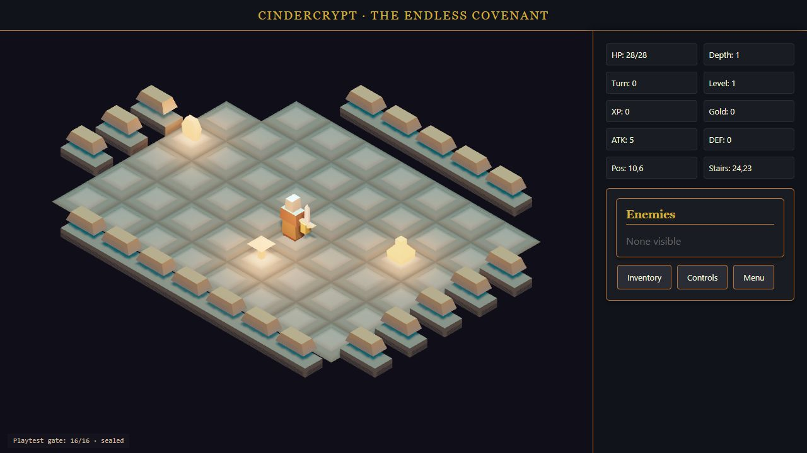

Cindercrypt 01
Descend through shifting dungeon floors. Fight, collect glowing loot, and build your character one turn at a time.
WASD / arrows · E to collect
THE IDEA IS YOURS. THE TOOLS ARE READY.
A game-making workspace for developers who want to spend more time creating. Describe it, play it, refine it—and take the code with you.

Describe. Shape an adapter-ready brief.
Build. Author with Nexus tools.
Playtest. Check the whole game loop.
Keep it. Export a native Unity project.
DON’T JUST READ ABOUT IT
Descend through shifting dungeon floors. Fight, collect glowing loot, and build your character one turn at a time.
Find your line through a celestial sky. Thread rings, gather feathers, and chase the horizon. Miss three rings and the run ends.
01 / SHAPE YOUR NEXT GAME
Build a brief around the systems the harness supports. Then continue in your local authoring studio.
FROM THE BROWSER TO YOUR EDITOR
The Cindercrypt export keeps the authored geometry and maps the game into native C# gameplay. Open it in Unity and keep building.
Use Unity 6000.3.23f1. Open Assets/Scenes/Game.unity and press Play. No API key or local server needed to run the exported game.
Native Windows checks passed rendering, movement, combat, inventory, defeat and restart. The project includes verification records. Unity shading and interface rendering differ from Three.js; exact visual parity and every adapter’s native export are still experimental. Android export is not included.